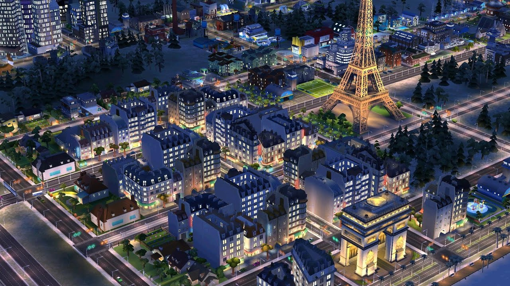

Simulation: Виртуальная реальность и управление процессами
Симуляторы (Simulation) – это жанр видеоигр, который стремится воспроизвести реальные процессы, системы или ситуации. Игроки могут управлять различными аспектами виртуального мира, будь то управление транспортом, строительство, ведение бизнеса или даже симуляция жизни. Эти игры часто ориентированы на реализм и предоставляют игрокам возможность взаимодействовать с окружающей средой.
Ключевые особенности симуляторов:
- Реализм: Симуляторы часто стремятся к максимальной точности в воспроизведении реальных процессов и взаимодействий.
- Управление и стратегия: Игроки принимают решения, которые влияют на развитие событий, что требует стратегического мышления и планирования.
- Обучение и развитие навыков: Многие симуляторы обучают игрока определённым навыкам, которые могут быть полезны в реальной жизни.
- Разнообразие жанров: Симуляторы могут охватывать широкий спектр тем, от полетов до сельского хозяйства или управления городом.
- Интерактивность: Игроки могут активно взаимодействовать с игровым миром, что делает процесс увлекательным и интересным.
Разновидности симуляторов:
- Симуляторы полетов: Игры, которые позволяют игрокам управлять самолетами и другими летательными аппаратами.
- Симуляторы управления: Игры, в которых игроки управляют городами, бизнесом или другими системами.
- Симуляторы жизни: Игры, в которых игроки управляют персонажами и их повседневной жизнью.
- Авто- и мото-симуляторы: Игры, которые фокусируются на управлении транспортными средствами.
- Симуляторы сельского хозяйства: Игры, которые позволяют игрокам заниматься фермерством и управлением сельским хозяйством.
Примеры игр:
Симуляторы полетов:
- Microsoft Flight Simulator
- X-Plane
- DCS World
Симуляторы управления:
- SimCity
- Cities: Skylines
- Planet Coaster
Симуляторы жизни:
- The Sims 4
- Animal Crossing: New Horizons
- Stardew Valley
Авто- и мото-симуляторы:
- Forza Horizon 5
- Gran Turismo 7
- Assetto Corsa
Симуляторы сельского хозяйства:
- Farming Simulator 22
- Harvest Moon
- Farming Simulator 19
Симуляторы предоставляют игрокам уникальную возможность испытать различные аспекты жизни и управления в виртуальном мире. Это отличный способ научиться чему-то новому и развить свои навыки, наслаждаясь игровым процессом.